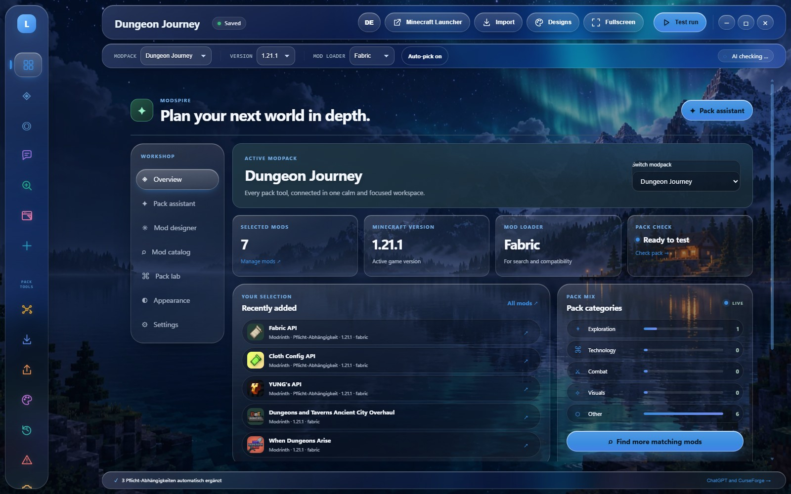
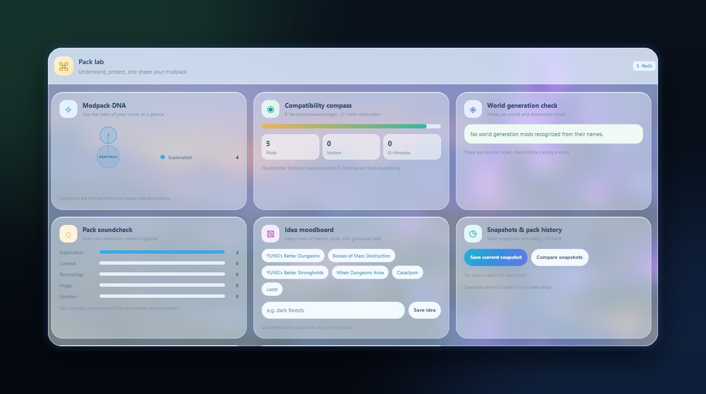
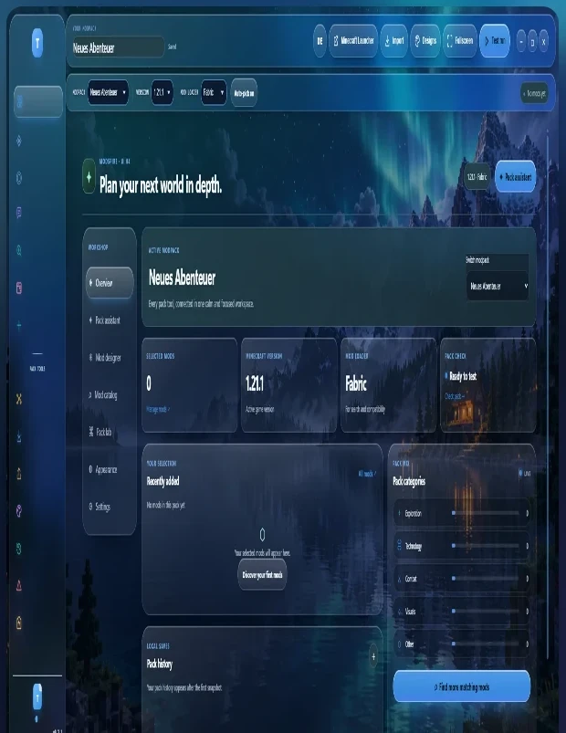
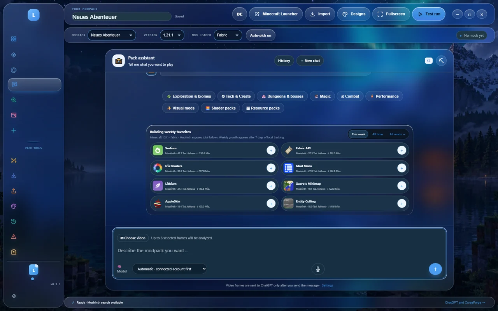

Modspire is a local-first Windows studio for Minecraft Java modpacks. Search Modrinth, shape an idea with an optional AI assistant, compare pack variants and export an installable .mrpack.
Version 0.3.3Portable · no installCatalog search needs no AI account

⌕
Modrinth searchVersion & loader aware
⇄
Compare snapshotsAdded · removed · changed
⬡
.mrpack exportExact versions & hashes

New in 0.3.0 – 0.3.3
From a shortlist to a real pack file.
Pack workflows grew up: keep variants side by side, update safely, and hand friends something they can install.
🫧
UI 5 · Liquid Glass
A fifth layout: frosted, light-catching panels over your Minecraft world, a floating rail, spring-loaded controls and soft view transitions. Plus fixes across all four existing layouts: readable headings on every theme, calmer chat follow-ups and a fully English interface.
0.3.2

🛠️
Mod Studio, built right in
Open the real Minecraft Mod Studio from any of Modspire’s layouts: pixel textures, Blockbench models, AI help, source export and supported JAR builds. It runs on a private loopback server with checksum-verified JDK and Gradle runtimes. No separate installation.
0.3.1
⇄
Compare any two snapshots
See added, removed and changed mod versions plus game setup between saved Pack Lab snapshots.
Pack Lab
⬆
Selective updates
Preview compatible Modrinth updates, pick individual versions, and get an automatic snapshot before anything changes.
Safe by default
📦
Installable .mrpack export
Exact versions, required dependencies, verified hashes, download URLs and a concrete loader version.
Modrinth format
⭐
Bookmarks with notes
Star mods in the catalog and keep a personal cross-pack library with editable notes, stored locally.
Library
🧩
Dependencies, explained
Required dependencies and client/server environments are explained in the selection and Pack Lab, including which parent pulled a shared library in.
🛡️
Hardened local server
The embedded Studio server blocks external origins and Host-header rebinding. Exact version pins survive import and dependency resolution.
Inside the app
Five rooms. One workflow.
Real screenshots from the Windows app, not mockups.

Demo
Modspire in motion.
Overview, Pack Assistant, Mod catalog and Pack Lab, captured from the real app in the Liquid Glass layout.
Recorded from the real app in demo mode (no sign-in, sample data): overview, Pack Assistant, Mod catalog and Pack Lab.
Everything included
Built for people who actually play the pack.
🗂️Multiple projects with separate Minecraft versions, loaders, selections and chat histories.
💬AI-assisted planning: review Modrinth suggestions before anything changes in your pack.
↶Undo & redo selection changes, including batch additions, with Ctrl+Z / Ctrl+Shift+Z.
🔗Shareable mod lists with project links, version, loader and dependency labels.
📥Import a Modrinth share code, public pack link or .mrpack into an editable project.
🩺Crash Analyzer explains likely causes and names a mod only when the log supports it.
📈Weekly favorites from private local daily snapshots, beside all-time follows.
🧠Your choice of AI: ChatGPT account, OpenAI or Anthropic API, Ollama, OmniRoute or a local OpenCode server.
Limits, honestly: Modspire organizes packs and reviews metadata. It does not install a Minecraft loader or prove that a pack starts in a game world. Credentials are encrypted with Windows DPAPI-backed storage; chat content goes to the provider you pick, only when you send it.
Download
One file. Double-click.
Modspire 0.3.3 for Windows
Portable executable for Windows 10 and 11. The first launch asks for a local display name. That name is not an account.